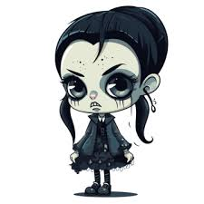

<!DOCTYPE html>
<html lang="en">
<head>
    <meta charset="UTF-8">
    <meta name="viewport" content="width=device-width, initial-scale=1.0">
    <title>Asylum Escape - Visual Interactive Story</title>
    <style>
        * {
            margin: 0;
            padding: 0;
            box-sizing: border-box;
        }

        body {
            font-family: 'Arial', sans-serif;
            background: #0a0a0a;
            color: #fff;
            overflow-x: hidden;
        }

        .game-container {
            max-width: 100vw;
            min-height: 100vh;
            position: relative;
        }

        .scene {
            width: 100%;
            min-height: 100vh;
            display: flex;
            flex-direction: column;
            align-items: center;
            justify-content: center;
            position: relative;
            background-size: cover;
            background-position: center;
            padding: 20px;
        }

        .scene-overlay {
            position: absolute;
            top: 0;
            left: 0;
            width: 100%;
            height: 100%;
            background: rgba(0, 0, 0, 0.7);
            z-index: 1;
        }

        .scene-content {
            position: relative;
            z-index: 10;
            width: 100%;
            max-width: 1200px;
            display: flex;
            flex-direction: column;
            align-items: center;
            gap: 30px;
        }

        .character-panel {
            width: 300px;
            height: 300px;
            background: rgba(20, 20, 30, 0.9);
            border: 4px solid #8b0000;
            border-radius: 20px;
            display: flex;
            align-items: center;
            justify-content: center;
            box-shadow: 0 0 40px rgba(139, 0, 0, 0.6);
            position: relative;
            overflow: hidden;
        }

        .character-panel img {
            width: 80%;
            height: 80%;
            object-fit: contain;
            filter: drop-shadow(0 0 10px rgba(255, 0, 0, 0.3));
        }

        .scared-effect {
            animation: shake 0.5s infinite;
        }

        @keyframes shake {
            0%, 100% { transform: translateX(0) rotate(0deg); }
            25% { transform: translateX(-5px) rotate(-2deg); }
            75% { transform: translateX(5px) rotate(2deg); }
        }

        .scene-title {
            font-size: 3em;
            color: #ff4444;
            text-align: center;
            text-shadow: 0 0 20px rgba(255, 0, 0, 0.8);
            font-weight: bold;
            letter-spacing: 2px;
        }

        .scene-description {
            font-size: 1.3em;
            text-align: center;
            max-width: 600px;
            line-height: 1.6;
            background: rgba(0, 0, 0, 0.8);
            padding: 20px 30px;
            border-radius: 15px;
            border: 2px solid #8b0000;
        }

        .choices-grid {
            display: grid;
            grid-template-columns: repeat(auto-fit, minmax(250px, 1fr));
            gap: 25px;
            width: 100%;
            max-width: 900px;
            margin-top: 20px;
        }

        .choice-card {
            background: linear-gradient(135deg, #1a0000, #2a0000);
            border: 3px solid #6a0000;
            border-radius: 15px;
            padding: 30px 20px;
            cursor: pointer;
            transition: all 0.3s ease;
            display: flex;
            flex-direction: column;
            align-items: center;
            gap: 15px;
            text-align: center;
            position: relative;
            overflow: hidden;
        }

        .choice-card::before {
            content: '';
            position: absolute;
            top: 0;
            left: -100%;
            width: 100%;
            height: 100%;
            background: linear-gradient(90deg, transparent, rgba(255, 0, 0, 0.3), transparent);
            transition: left 0.5s;
        }

        .choice-card:hover::before {
            left: 100%;
        }

        .choice-card:hover {
            transform: translateY(-10px) scale(1.05);
            border-color: #ff0000;
            box-shadow: 0 10px 40px rgba(255, 0, 0, 0.5);
            background: linear-gradient(135deg, #2a0000, #3a0000);
        }

        .choice-icon {
            font-size: 4em;
            filter: drop-shadow(0 0 15px rgba(255, 0, 0, 0.8));
        }

        .choice-text {
            font-size: 1.2em;
            font-weight: bold;
            color: #fff;
        }

        .choice-hint {
            font-size: 0.9em;
            color: #aaa;
            font-style: italic;
        }

        .ending-panel {
            background: rgba(139, 0, 0, 0.2);
            border: 5px solid #ff0000;
            border-radius: 20px;
            padding: 40px;
            max-width: 700px;
            text-align: center;
            animation: pulse 2s infinite;
        }

        @keyframes pulse {
            0%, 100% { box-shadow: 0 0 20px rgba(255, 0, 0, 0.5); }
            50% { box-shadow: 0 0 40px rgba(255, 0, 0, 0.8); }
        }

        .ending-title {
            font-size: 2.5em;
            color: #ff4444;
            margin-bottom: 20px;
            text-shadow: 0 0 20px rgba(255, 0, 0, 1);
        }

        .ending-type {
            font-size: 1.5em;
            margin-bottom: 15px;
        }

        .ending-good {
            color: #4caf50;
        }

        .ending-bad {
            color: #f44336;
        }

        .ending-bittersweet {
            color: #ff9800;
        }

        .restart-btn {
            background: linear-gradient(135deg, #8b0000, #ff0000);
            color: white;
            border: none;
            padding: 20px 50px;
            font-size: 1.3em;
            border-radius: 50px;
            cursor: pointer;
            margin-top: 30px;
            transition: all 0.3s;
            font-weight: bold;
            box-shadow: 0 5px 20px rgba(255, 0, 0, 0.5);
        }

        .restart-btn:hover {
            transform: scale(1.1);
            box-shadow: 0 10px 40px rgba(255, 0, 0, 0.8);
        }

        .progress-bar {
            position: fixed;
            top: 0;
            left: 0;
            width: 0%;
            height: 5px;
            background: linear-gradient(90deg, #ff0000, #ff4444);
            z-index: 1000;
            transition: width 0.3s;
        }

        @media (max-width: 768px) {
            .scene-title {
                font-size: 2em;
            }

            .character-panel {
                width: 200px;
                height: 200px;
            }

            .choices-grid {
                grid-template-columns: 1fr;
            }

            .choice-icon {
                font-size: 3em;
            }
        }

        .fade-in {
            animation: fadeIn 0.8s ease-in;
        }

        @keyframes fadeIn {
            from { opacity: 0; }
            to { opacity: 1; }
        }

        .scene-visual {
            width: 100%;
            max-width: 800px;
            height: 400px;
            background: rgba(10, 10, 10, 0.9);
            border: 4px solid #8b0000;
            border-radius: 20px;
            display: flex;
            align-items: center;
            justify-content: center;
            font-size: 8em;
            box-shadow: 0 0 30px rgba(139, 0, 0, 0.5);
            position: relative;
            overflow: hidden;
        }

        .scene-visual::before {
            content: '';
            position: absolute;
            top: 0;
            left: 0;
            width: 100%;
            height: 100%;
            background: linear-gradient(45deg, transparent 30%, rgba(255, 0, 0, 0.1) 50%, transparent 70%);
            animation: shine 3s infinite;
        }

        @keyframes shine {
            0% { transform: translateX(-100%); }
            100% { transform: translateX(100%); }
        }
    </style>
</head>
<body>
    <div class="progress-bar" id="progressBar"></div>
    <div class="game-container">
        <div class="scene fade-in" id="gameScene">
            <div class="scene-overlay"></div>
            <div class="scene-content" id="sceneContent">
                <!-- Content injected by JavaScript -->
            </div>
        </div>
    </div>

    <script>
        const storyData = {
            start: {
                title: "🏚️ THE ASYLUM",
                visual: "🏥",
                description: "You stand before Blackwood Asylum. Your sister vanished here 3 months ago...",
                choices: [
                    { icon: "🪜", text: "GO UPSTAIRS", hint: "Patient rooms above", next: "upstairs" },
                    { icon: "⬇️", text: "BASEMENT", hint: "Dark and mysterious", next: "basement" },
                    { icon: "🚪", text: "MAIN HALL", hint: "Straight ahead", next: "corridor" }
                ],
                progress: 10
            },
            upstairs: {
                title: "😨 PATIENT FLOOR",
                visual: "🚪",
                description: "Eerie hallways. Scratching sounds from one room...",
                characterState: "scared",
                choices: [
                    { icon: "👂", text: "CHECK THE SOUND", hint: "What's making that noise?", next: "scratchingRoom" },
                    { icon: "🔍", text: "TRY OTHER DOORS", hint: "Search for clues", next: "otherDoors" },
                    { icon: "↩️", text: "GO BACK", hint: "Return to entrance", next: "start" }
                ],
                progress: 25
            },
            basement: {
                title: "💀 THE MORGUE",
                visual: "🪦",
                description: "Cold metal tables. Your sister's necklace lies here! Fresh footprints lead deeper...",
                characterState: "scared",
                choices: [
                    { icon: "👣", text: "FOLLOW FOOTPRINTS", hint: "Where do they lead?", next: "followFootprints" },
                    { icon: "📁", text: "SEARCH FILES", hint: "Find evidence", next: "searchFiles" },
                    { icon: "💎", text: "TAKE NECKLACE & RUN", hint: "Get out now!", next: "leaveWithNecklace" }
                ],
                progress: 25
            },
            corridor: {
                title: "👻 DARK CORRIDOR",
                visual: "🌑",
                description: "You hear footsteps behind you!",
                characterState: "scared",
                choices: [
                    { icon: "🫣", text: "HIDE", hint: "Take cover quickly", next: "hideOffice" },
                    { icon: "👤", text: "CONFRONT", hint: "Face them", next: "confront" },
                    { icon: "🏃", text: "RUN!", hint: "Sprint away", next: "runAway" }
                ],
                progress: 25
            },
            scratchingRoom: {
                title: "👧 YOUR SISTER!",
                visual: "😱",
                description: "You find her! But she's different... 'They're still here,' she whispers.",
                characterState: "scared",
                choices: [
                    { icon: "🤝", text: "ESCAPE TOGETHER", hint: "Get her out now", next: "escapeWithSister" },
                    { icon: "💬", text: "ASK WHAT HAPPENED", hint: "Learn the truth", next: "askSister" },
                    { icon: "📱", text: "CALL FOR HELP", hint: "Phone for rescue", next: "callHelp" }
                ],
                progress: 60
            },
            escapeWithSister: {
                title: "🏃‍♂️ THE EXIT",
                visual: "🚪",
                description: "You reach the door! But she stops: 'I can't leave... they're in my head.'",
                characterState: "scared",
                choices: [
                    { icon: "💪", text: "DRAG HER OUT", hint: "Force her to escape", next: "forcedEscape" },
                    { icon: "❤️", text: "STAY & HELP", hint: "Find another way", next: "stayAndHelp" },
                    { icon: "🚨", text: "GET POLICE", hint: "Promise to return", next: "promiseReturn" }
                ],
                progress: 80
            },
            forcedEscape: {
                title: "✅ FREEDOM!",
                visual: "🌅",
                description: "You pull her through! She screams but you don't stop. Miles later, she calms down. 'You saved me...'",
                ending: true,
                endingType: "good",
                endingTitle: "TRIUMPHANT ESCAPE",
                progress: 100
            },
            stayAndHelp: {
                title: "🔬 THE LAB",
                visual: "⚗️",
                description: "You find the reversal equipment and free her mind! But alarms trigger as you both run out...",
                ending: true,
                endingType: "bittersweet",
                endingTitle: "SAVED - BUT THEY'RE STILL OUT THERE",
                progress: 100
            },
            promiseReturn: {
                title: "💔 BROKEN PROMISE",
                visual: "🌧️",
                description: "Police don't believe you. When you return, the asylum has vanished... You never see her again.",
                ending: true,
                endingType: "bad",
                endingTitle: "LOST FOREVER",
                progress: 100
            },
            askSister: {
                title: "⚠️ TOO LATE",
                visual: "👥",
                description: "She tells of experiments... Then you hear them coming from all sides!",
                characterState: "scared",
                choices: [
                    { icon: "✊", text: "FIGHT", hint: "Battle your way out", next: "fightOut" },
                    { icon: "🪟", text: "JUMP WINDOW", hint: "Dangerous escape", next: "jumpWindow" }
                ],
                progress: 70
            },
            fightOut: {
                title: "💥 VICTORIOUS!",
                visual: "🏆",
                description: "Fighting together, you overpower them and escape into daylight. You're both free!",
                ending: true,
                endingType: "good",
                endingTitle: "FOUGHT FOR FREEDOM",
                progress: 100
            },
            jumpWindow: {
                title: "🌟 LEAP OF FAITH",
                visual: "💨",
                description: "You both jump! Landing in old mattresses below, you limp away together. Freedom!",
                ending: true,
                endingType: "bittersweet",
                endingTitle: "ESCAPED - MARKED FOREVER",
                progress: 100
            },
            callHelp: {
                title: "📵 NO SIGNAL",
                visual: "❌",
                description: "Your phone shows: 'WELCOME TO THE FAMILY.' The door slams shut...",
                ending: true,
                endingType: "bad",
                endingTitle: "TRAPPED",
                progress: 100
            },
            otherDoors: {
                title: "📖 THE JOURNAL",
                visual: "📔",
                description: "You find a doctor's journal describing horrific experiments. All doors slam shut!",
                characterState: "scared",
                choices: [
                    { icon: "🪟", text: "BREAK WINDOW", hint: "Smash your way out", next: "breakWindow" },
                    { icon: "🔍", text: "SEARCH FOR EXIT", hint: "Find another way", next: "searchOffice" }
                ],
                progress: 50
            },
            breakWindow: {
                title: "🏃‍♀️ ESCAPED ALONE",
                visual: "🌳",
                description: "You smash through and run! You're free... but your sister is still inside.",
                ending: true,
                endingType: "bittersweet",
                endingTitle: "ESCAPED - BUT AT WHAT COST?",
                progress: 100
            },
            searchOffice: {
                title: "🚨 DISCOVERY",
                visual: "⚠️",
                description: "Hidden door leads to the morgue. You find everyone hooked to machines, including your sister!",
                characterState: "scared",
                choices: [
                    { icon: "🔌", text: "SHUT IT DOWN", hint: "Stop the machines", next: "shutdownMachines" },
                    { icon: "📸", text: "DOCUMENT & ESCAPE", hint: "Get evidence", next: "documentAndEscape" }
                ],
                progress: 85
            },
            shutdownMachines: {
                title: "🎊 HERO!",
                visual: "⭐",
                description: "You free everyone! In the chaos, you all escape. You saved them all!",
                ending: true,
                endingType: "good",
                endingTitle: "EVERYONE SAVED - HERO!",
                progress: 100
            },
            documentAndEscape: {
                title: "📰 VICTORY!",
                visual: "📺",
                description: "Your evidence goes viral. Police raid and rescue everyone. You're a hero!",
                ending: true,
                endingType: "good",
                endingTitle: "VICTORY THROUGH EVIDENCE",
                progress: 100
            },
            followFootprints: {
                title: "🕳️ THE TUNNELS",
                visual: "🌀",
                description: "Dark tunnels split in two directions. You hear hypnotic voices chanting...",
                characterState: "scared",
                choices: [
                    { icon: "👂", text: "FOLLOW VOICES", hint: "Investigate the chanting", next: "followVoices" },
                    { icon: "➡️", text: "OTHER PATH", hint: "Avoid the voices", next: "otherTunnel" }
                ],
                progress: 45
            },
            followVoices: {
                title: "😵 ABSORBED",
                visual: "🌀",
                description: "The voices pull you in. Robed figures surround you. 'Join us forever...' Your will fades.",
                ending: true,
                endingType: "bad",
                endingTitle: "ABSORBED BY THE COLLECTIVE",
                progress: 100
            },
            otherTunnel: {
                title: "🌲 FREEDOM",
                visual: "🚗",
                description: "You escape through the tunnel into the forest! But you never found your sister...",
                ending: true,
                endingType: "bittersweet",
                endingTitle: "ESCAPED ALONE",
                progress: 100
            },
            searchFiles: {
                title: "📂 THE TRUTH",
                visual: "📄",
                description: "You find your sister's file: 'Ward C - Permanent Resident.' Footsteps approach!",
                characterState: "scared",
                choices: [
                    { icon: "🏃", text: "RUN WITH FILE", hint: "Take evidence and go", next: "runWithFile" },
                    { icon: "👤", text: "CONFRONT", hint: "Face whoever's coming", next: "confrontBasement" }
                ],
                progress: 50
            },
            runWithFile: {
                title: "🎯 MISSION SUCCESS!",
                visual: "👮",
                description: "You escape with the file! Police raid and rescue everyone, including your sister!",
                ending: true,
                endingType: "good",
                endingTitle: "HEROIC ESCAPE",
                progress: 100
            },
            confrontBasement: {
                title: "💉 DANGER",
                visual: "😱",
                description: "The doctor pulls out a syringe! 'You'll join your sister...'",
                characterState: "scared",
                choices: [
                    { icon: "✊", text: "FIGHT", hint: "Attack the doctor", next: "fightDoctor" },
                    { icon: "🏃", text: "RUN!", hint: "Sprint away", next: "runDoctor" }
                ],
                progress: 65
            },
            fightDoctor: {
                title: "💪 VICTORY!",
                visual: "🏆",
                description: "You overpower the doctor, grab keys, and rescue your sister. Together you escape!",
                ending: true,
                endingType: "good",
                endingTitle: "FOUGHT AND WON",
                progress: 100
            },
            runDoctor: {
                title: "🏃‍♀️ NARROW ESCAPE",
                visual: "🚗",
                description: "You find your sister and escape together. You're free, but they're looking for you...",
                ending: true,
                endingType: "bittersweet",
                endingTitle: "ON THE RUN",
                progress: 100
            },
            leaveWithNecklace: {
                title: "🔒 TRAPPED",
                visual: "⛓️",
                description: "You grab the necklace and run, but the exit is locked. Laughter echoes: 'You can't escape...'",
                ending: true,
                endingType: "bad",
                endingTitle: "TRAPPED FOREVER",
                progress: 100
            },
            hideOffice: {
                title: "📑 PROJECT FILE",
                visual: "📁",
                description: "Hidden, you find 'PROJECT RESURRECT' with your sister's photo attached...",
                characterState: "scared",
                choices: [
                    { icon: "📁", text: "TAKE FILE", hint: "Evidence!", next: "takeFile" },
                    { icon: "👤", text: "FOLLOW DOCTOR", hint: "See where they go", next: "followFigure" }
                ],
                progress: 55
            },
            takeFile: {
                title: "🗺️ THE MAP",
                visual: "🧭",
                description: "The file has escape routes! You navigate to Ward C and find your sister...",
                characterState: "scared",
                choices: [
                    { icon: "🤝", text: "TAKE HER", hint: "Risk it all", next: "takeSisterAnyway" },
                    { icon: "🏃", text: "IT'S A TRAP!", hint: "Escape alone", next: "trapRun" }
                ],
                progress: 75
            },
            takeSisterAnyway: {
                title: "❤️ LOVE WINS",
                visual: "💖",
                description: "Despite the trap, you take her. She snaps out of it: 'Thank you...' You both escape!",
                ending: true,
                endingType: "good",
                endingTitle: "LOVE CONQUERS ALL",
                progress: 100
            },
            trapRun: {
                title: "🚶 ALONE",
                visual: "😔",
                description: "You realize it's a trap and escape alone. You're safe, but never find your real sister...",
                ending: true,
                endingType: "bittersweet",
                endingTitle: "ESCAPED ALONE",
                progress: 100
            },
            followFigure: {
                title: "💻 THE LAB",
                visual: "🖥️",
                description: "You find a secret lab! Your sister is on monitors... and her boyfriend is here too!",
                characterState: "scared",
                choices: [
                    { icon: "🔌", text: "FREE HER NOW", hint: "Unplug everything", next: "freeSister" },
                    { icon: "💬", text: "ASK HIM", hint: "What happened?", next: "askBoyfriend" }
                ],
                progress: 70
            },
            freeSister: {
                title: "⚡ BOLD MOVE!",
                visual: "✨",
                description: "You disconnect her. She gasps awake! Together you all escape!",
                ending: true,
                endingType: "good",
                endingTitle: "BOLD RESCUE SUCCESS",
                progress: 100
            },
            askBoyfriend: {
                title: "⏰ THE PLAN",
                visual: "🕐",
                description: "He's been sabotaging! 'In 2 hours, system failure frees everyone. Wait?'",
                characterState: "scared",
                choices: [
                    { icon: "⏳", text: "TRUST & WAIT", hint: "Wait for the plan", next: "trustBoyfriend" },
                    { icon: "🏃", text: "FREE HER NOW", hint: "Don't wait", next: "freeSisterNow" }
                ],
                progress: 80
            },
            trustBoyfriend: {
                title: "🎊 PERFECT!",
                visual: "🎉",
                description: "You wait. At exactly 2 hours, all locks open! Everyone escapes! Perfect victory!",
                ending: true,
                endingType: "good",
                endingTitle: "PERFECT VICTORY",
                progress: 100
            },
            freeSisterNow: {
                title: "⚠️ IMPATIENT",
                visual: "😔",
                description: "You free her and escape. Later you learn the plan worked for everyone else. Could've saved all...",
                ending: true,
                endingType: "bittersweet",
                endingTitle: "SAVED ONE - MISSED SAVING ALL",
                progress: 100
            },
            confront: {
                title: "👨‍⚕️ THE DOCTOR",
                visual: "👨‍⚕️",
                description: "A gaunt man: 'Don't go to Ward C. Once you're there, you can't leave...'",
                characterState: "scared",
                choices: [
                    { icon: "🤝", text: "ASK FOR HELP", hint: "Get his assistance", next: "askForHelp" },
                    { icon: "🚪", text: "WARD C ALONE", hint: "Go solo", next: "wardC" }
                ],
                progress: 60
            },
            askForHelp: {
                title: "🗝️ ALLIANCE",
                visual: "🤝",
                description: "He agrees to help! Together you reach Ward C and face a choice...",
                characterState: "scared",
                choices: [
                    { icon: "👥", text: "SAVE EVERYONE", hint: "All or nothing", next: "saveEveryone" },
                    { icon: "👧", text: "JUST SISTER", hint: "Only her", next: "saveOnlySister" }
                ],
                progress: 85
            },
            saveEveryone: {
                title: "🌟 TRUE HERO!",
                visual: "🏆",
                description: "You refuse to leave anyone! Together, you all fight to freedom. Everyone is saved!",
                ending: true,
                endingType: "good",
                endingTitle: "COMPLETE VICTORY - EVERYONE SAVED",
                progress: 100
            },
            saveOnlySister: {
                title: "💔 GUILT",
                visual: "😔",
                description: "You save only her and escape. She's safe, but you left others behind...",
                ending: true,
                endingType: "bittersweet",
                endingTitle: "SAVED ONE - LEFT MANY",
                progress: 100
            },
            wardC: {
                title: "🌀 THE RITUAL",
                visual: "⚠️",
                description: "You enter Ward C. Your sister: 'They needed you to complete the ritual...' The door locks.",
                ending: true,
                endingType: "bad",
                endingTitle: "RITUAL COMPLETE - TRAPPED",
                progress: 100
            },
            runAway: {
                title: "🌀 LOST",
                visual: "😵",
                description: "You run in circles. The asylum twists around you. Finally you collapse. 'Another resident...'",
                ending: true,
                endingType: "bad",
                endingTitle: "LOST IN THE MAZE",
                progress: 100
            }
        };

        let currentScene = 'start';
        let totalChoices = 0;

        function displayScene(sceneKey) {
            const scene = storyData[sceneKey];
            const content = document.getElementById('sceneContent');

            // Update progress bar
            document.getElementById('progressBar').style.width = scene.progress + '%';

            let html = `
                <h1 class="scene-title">${scene.title}</h1>
                <div class="scene-visual">${scene.visual}</div>
                <div class="character-panel">
                    
                </div>
                <div class="scene-description">${scene.description}</div>
            `;

            if (scene.ending) {
                const endingClass = `ending-${scene.endingType}`;
                html += `
                    <div class="ending-panel">
                        <div class="ending-title">${scene.endingTitle}</div>
                        <div class="ending-type ${endingClass}">
                            ${scene.endingType === 'good' ? '✅ GOOD ENDING' :
                              scene.endingType === 'bad' ? '❌ BAD ENDING' :
                              '⚠️ BITTERSWEET ENDING'}
                        </div>
                        <button class="restart-btn" onclick="restartGame()">🔄 PLAY AGAIN</button>
                    </div>
                `;
            } else {
                html += '<div class="choices-grid">';
                scene.choices.forEach(choice => {
                    html += `
                        <div class="choice-card" onclick="makeChoice('${choice.next}')">
                            <div class="choice-icon">${choice.icon}</div>
                            <div class="choice-text">${choice.text}</div>
                            <div class="choice-hint">${choice.hint}</div>
                        </div>
                    `;
                });
                html += '</div>';
            }

            content.innerHTML = html;
            content.classList.add('fade-in');
            setTimeout(() => content.classList.remove('fade-in'), 800);

            window.scrollTo({ top: 0, behavior: 'smooth' });
        }

        function makeChoice(nextScene) {
            totalChoices++;
            currentScene = nextScene;
            displayScene(nextScene);
        }

        function restartGame() {
            currentScene = 'start';
            totalChoices = 0;
            displayScene('start');
        }

        // Initialize
        displayScene('start');
    </script>
</body>
</html>